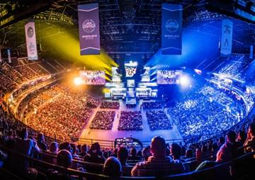

อีสปอร์ต (อังกฤษ: Esports) หรือ กีฬาอิเล็กทรอนิกส์ (อังกฤษ: electronic sports) คือกีฬาประเภทบุคคลหรือทีมชนิดหนึ่ง กรมกีฬาได้จัดอีสปอร์ตเป็นส่วนหนึ่งของกีฬาที่เกี่ยวกับกับการแข่งขันวิดีโอเกม โดยมีการแข่งตามประเภทของวิดิโอเกมเช่น เกมวางแผนการรบ, เกมต่อสู้, เกมยิงมุมมองบุคคลที่หนึ่ง, โมบา , เกมอินดี้ การแข่งขันนั้นแบ่งออกเป็นระดับสมัครเล่น กึ่งอาชีพ และระดับมืออาชีพ รวมถึงมีรายการแข่งขันและลีกต่าง ๆ เช่นเดียวกับกีฬาทั่วไป ในปลายทศวรรษ 2010 ผู้ชมอีสปอร์ตมีจำนวนรวมทั้งสิ้นประมาณ 454 ล้านคนทั่วโลก[1] เกิดรายได้กว่า 1 พันล้านเหรียญสหรัฐ[2]เกิดแพลตฟอร์มรับชมออนไลน์ ผ่านทางยูทูปและทวิตช์ กีฬาอีสปอร์ตที่นิยมแข่งขันในปัจจุบัน ได้แก่ ลีกออฟเลเจ็นดส์ โดตา เคาเตอร์สไตร์ค วาโลแรนต์ โอเวอร์วอตช์ พับจี ฟอร์ตไนต์ อารีนาออฟเวเลอร์ พีอีเอส
